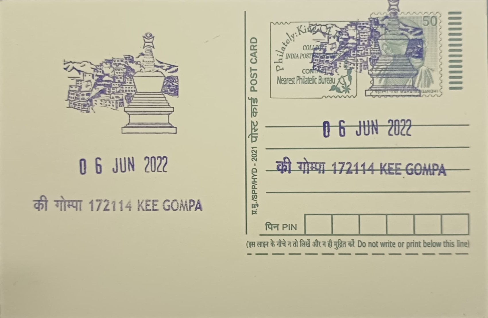

Key Monastery
की मठ


Key Monastery, known locally as Kye or Ki Gompa, traces its origin to the eleventh century and is traditionally linked to Dromtön (1008-1064 CE), a principal disciple of the Bengali master Atisha who helped revive Buddhism in the western Himalayas. Some scholars argue the original Kadampa foundation associated with Dromtön actually stood at the nearby village of Rangrik and was destroyed in the fourteenth century, with the present site at Key emerging later as the valley's monastic Buddhism regrouped under new patronage. Whichever account is more precise, the monastery's name is now inseparable from the dramatic conical hill above the Spiti River on which it stands, at an elevation of roughly 4,166 metres.
As the largest and most prominent monastery in the Spiti Valley, Key Gompa belongs to the Gelug or 'Yellow Hat' order of Tibetan Buddhism, the same lineage headed by the Dalai Lamas, and functions as a major seat of monastic learning for the region. It trains resident lamas in Buddhist philosophy, ritual, and liturgical arts, drawing novices from villages across Spiti and beyond, and its abbot and senior monks hold recognised standing within the Gelugpa hierarchy of Himachal Pradesh. Beyond its religious role, the monastery is regarded as the cultural anchor of the valley, its silhouette reproduced on tourist literature and used as a reference point for the entire Kaza-Kibber circuit.
The monastery's history has been one of repeated destruction and rebuilding rather than a single continuous construction. It suffered serious damage during Mongol-assisted incursions in the mid-seventeenth century under the Fifth Dalai Lama's era, when it passed into Gelugpa hands, and was plundered again around 1821 amid conflict between Ladakh and Kullu forces. In 1841 Dogra troops under commanders Ghulam Khan and Rahim Khan inflicted further damage, and a major earthquake in 1975 cracked walls and toppled sections of the structure. Each episode left the complex with an additional layer of repair, producing the irregular, windowless, fort-like stack of temple halls, store rooms, and monks' cells that rises in uneven tiers up the hillside today.
A defining feature of Key Monastery is its collection of religious art and ritual objects, including old thangka paintings, manuscripts, and ceremonial weapons and musical instruments used in the masked Chaam dance, performed over two days each year, typically in late summer, in which monks in brocade robes and heavy painted or papier-mache masks re-enact episodes from Buddhist cosmology and the passage through death and rebirth. The dance draws villagers from across the valley and has become one of the more widely photographed living rituals of Spiti, documented by trekkers and researchers alike as a surviving example of Himalayan monastic performance tradition that has continued largely unchanged in form.
Following the 1975 earthquake, repair work on the monastery was carried out with assistance from the Archaeological Survey of India and the State Public Works Department of Himachal Pradesh, stabilising the damaged sections without altering the building's layered, improvised character. The complex today houses several hundred monks and maintains an attached school, including a government primary school established in 1984 for both young monks and children from Key village, alongside a monastic study programme in Buddhist scripture and ritual practice. Administered as an active Gelugpa institution under its resident lamas, Key Monastery continues to function simultaneously as a working seminary, a pilgrimage site, and one of the most visited stops on the Kaza tourist circuit, its daily routine of prayer and instruction carrying on much as it has after each of its past rebuildings.
| Date of Introduction | March 22, 2022 |
|---|---|
| Address | Branch Postmaster, |
| Kee Gompa BO, | |
| Lahaul and Spiti (dt.), Himachal Pradesh - 172114. |